SLS Lecture 7 : Assembly Programming Introduction
Contents
7. SLS Lecture 7 : Assembly Programming Introduction#
Processes and Binaries
7.1. Revisit Processes#


7.1.1. A Process is a Running executable but what really is an executable???#
Let’s see what we can figure out poking at the file a little
So it is marked as a executable “x” in the permissions bits
How big is it?
Lets see if we can look at its contents
Why did cat /bin/ls not help?
Because whatever is in it its is not ASCII encode.
How about looking trying to dump its contents by look at the values of its bytes
there are several utilities that we can use to “dump” a file’s contents
These programs read the file and convert the bytes into ascii representations of the value for each byte
you can use
man -k dumpto see commands that have the word dump in their namesthe one we will focus on are
xxdbut two others that are really useful areod(octal dump) andhd(hexdump)
7.1.1.1. Lets use xxd to look at the first 80 bytes of the /bin/ls#
First in hexadecimal notation and then in binary (base 2)
xxd command to display first 80 bytes (-l 80) of the file in units/groups of 1 byte (-g 1) values with 8 units per line (-c 8):
xxd -l 80 -g 1 -c 8 /bin/ls
and
same as above but using binary (base 2) notation (-b) for each value:
xxd -l 80 -g 1 -c 8 -b /bin/ls
Ok so while that’s a cool party trick … so what do they mean? What else can we do?
Lets see what the
filecommand can tell us.
Ok it is an ELF file let’s see what, if anything, the manual has to say about elf.
We could keep going down this road to poke at its contents using command designed to decode the elf file and dump information about it
readelf --all /bin/ls
objdump --all /bin/ls
But let’s try another approach before we stand back and put the pieces together.
Let’s lookup what the OS kernel function for “executing” a binary file has to say
7.2. Executables as “Process Images”#
Remember what the Hardware looks like.

Remember that the OS Kernel is designed to make it easier to use the hardware to run programs.
Now we need to dig into this idea more carefully.
7.2.1. Processes As CPU and Memory context#
A process is the way that the Operating System let our programs use the CPU and Memory in a controlled way.
Each Process is independent “Context” to execute a program. Where a context provides a program with its own view of Memory and the CPU

7.2.2. Process as a Context for using the CPU and Memory#
A process is a way for us to use the CPU and memory through the programs we write
But not the I/O devices – Only the OS can directly access the I/O devices
as we will see later the only way for our programs to do I/O will be make calls to the OS
To understand what we are doing when we write assembly code to create a program
we need to understand how the CPU works and Memory together as programmable system

Let’s start with a quick overview of the basic Von Neumman computer model and how the CPU and memory work together.
 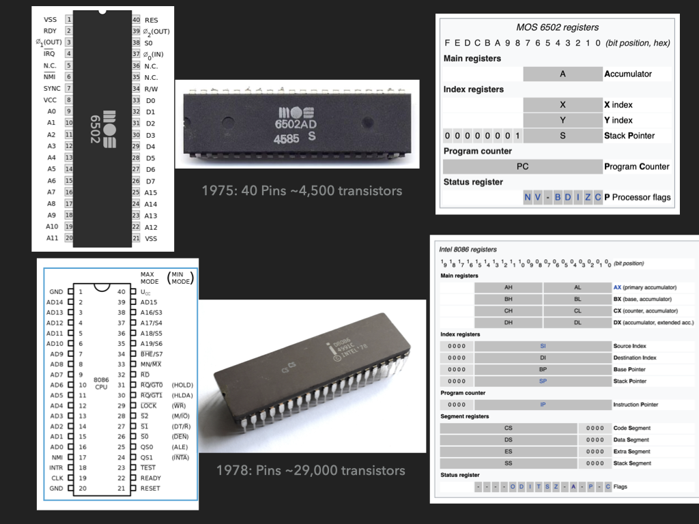
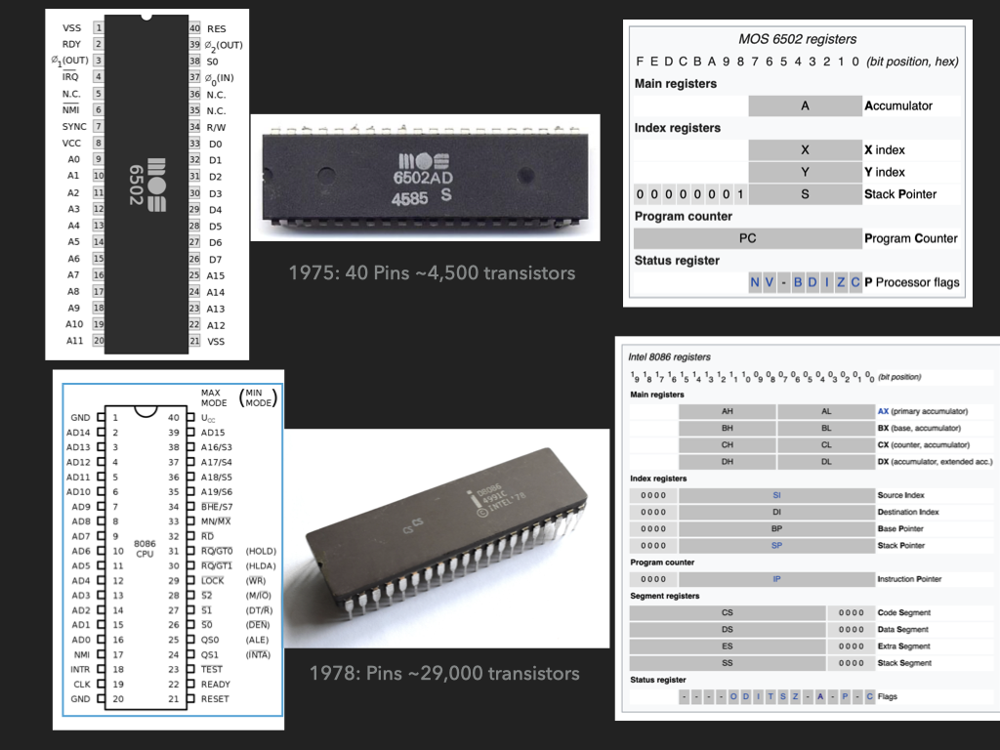


Or lets play with a computer

 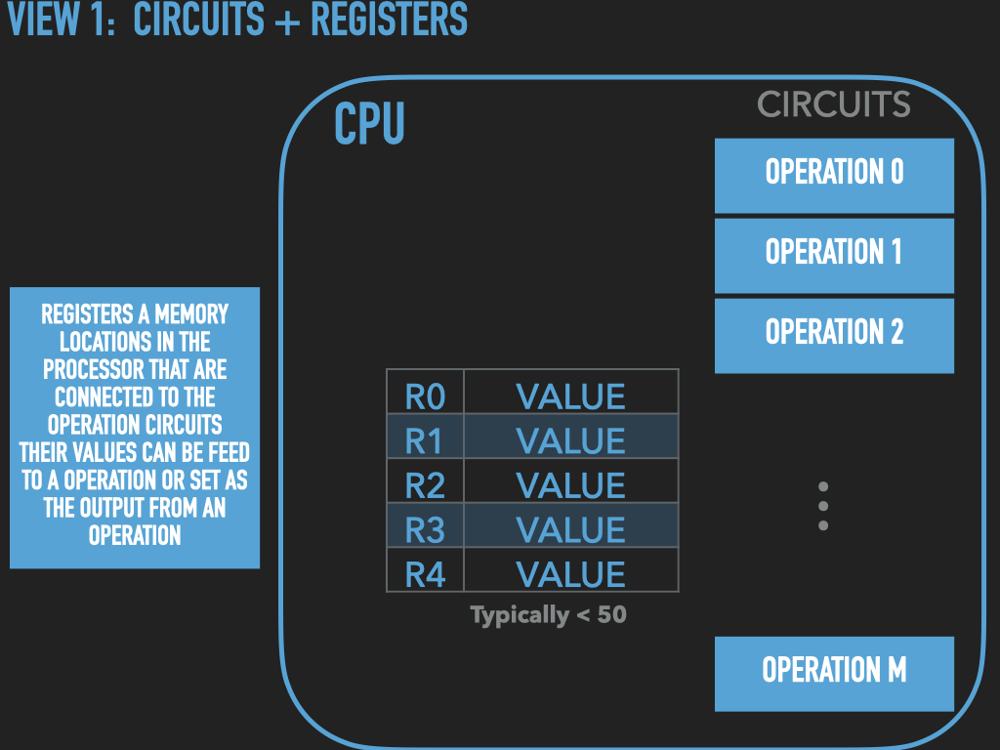
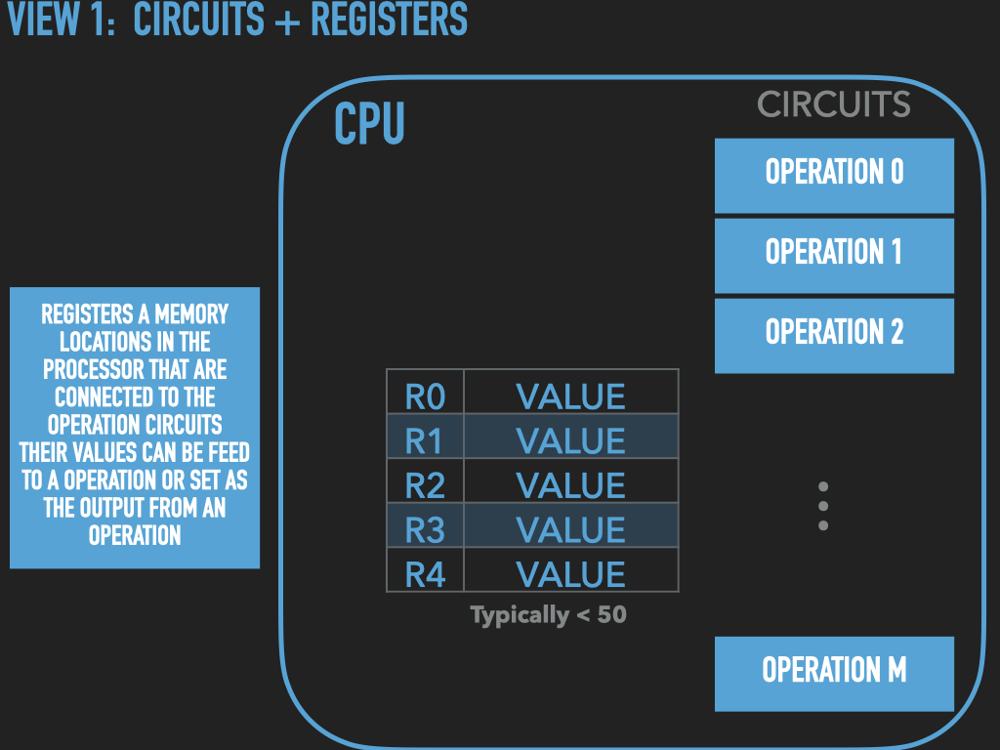


 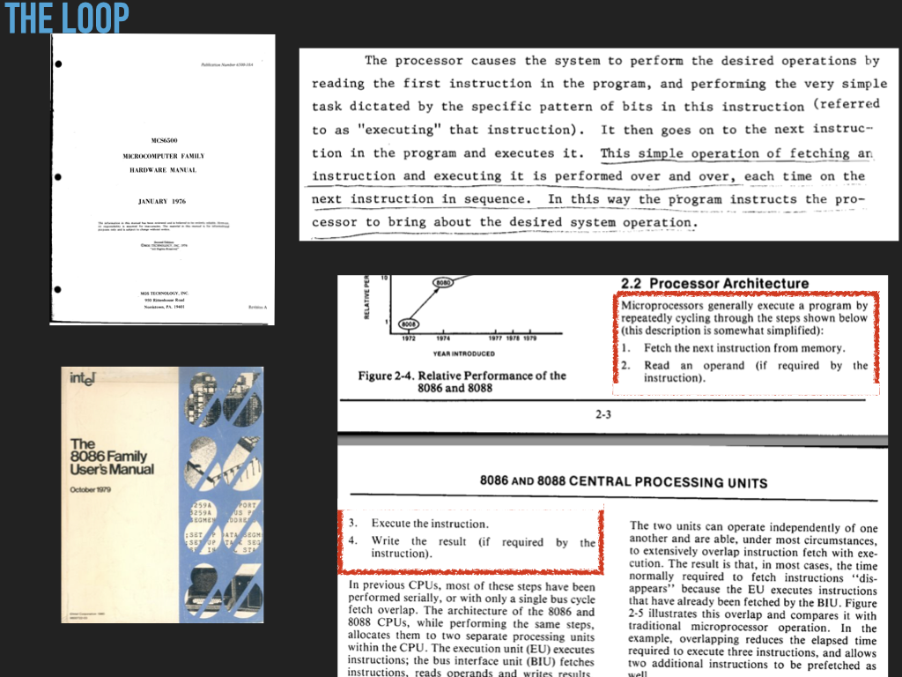
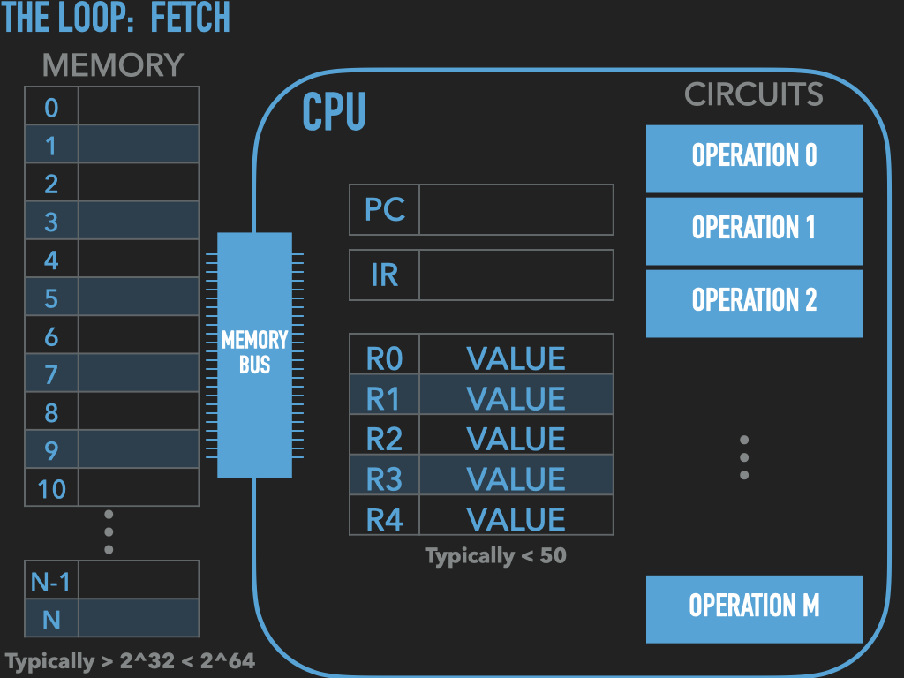
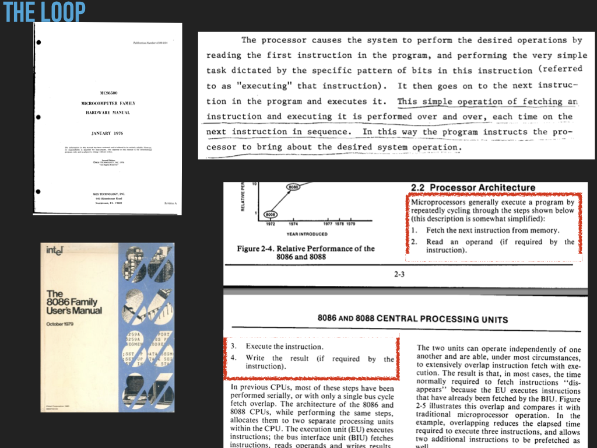
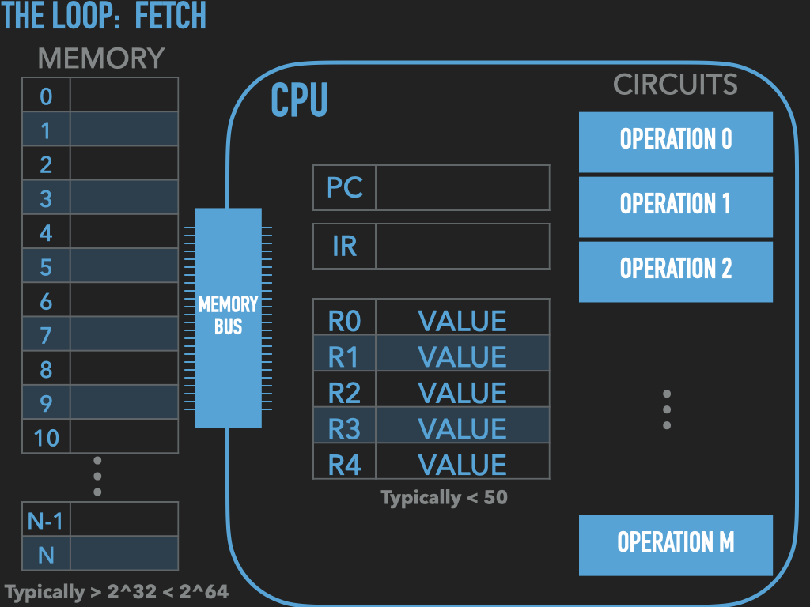


 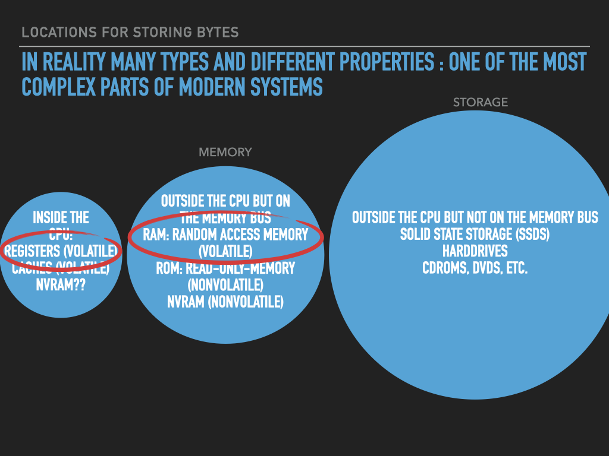
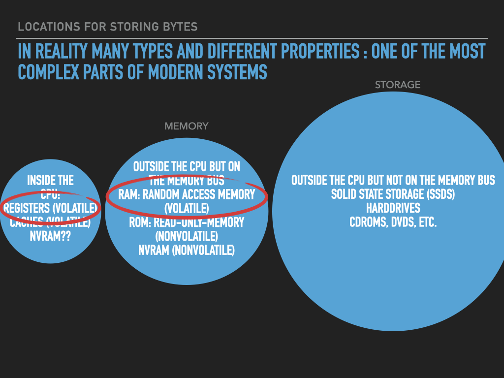
So a Process is :
an OS provided context that lets us
direct the CPU via a binary program file
that is loaded into the RAM memory array when we “run” it! (exec)
A binary “contains” the initial contents of memory that the OS “loads” into our process’s memory.
“memory image” – the exact byte values and where they go into memory
A process’s memory is called the process’s address space.
7.3. The Tools and how to use them#
Preparing / creating binaries
Assembler: Tool that translates a programmer’s description of what to put into memory into fragments of an executable file
Linker: Tool that combines the fragments into an complete executable that the OS can load
Process inspection and manipulation
A Debugger that allows us to look at and control a Process
7.3.1. Assembler and Linker#


7.3.2. Debugger#
Provides us a way of looking inside a process, freezing its execution, examining and modify the cpu registers and memory.

 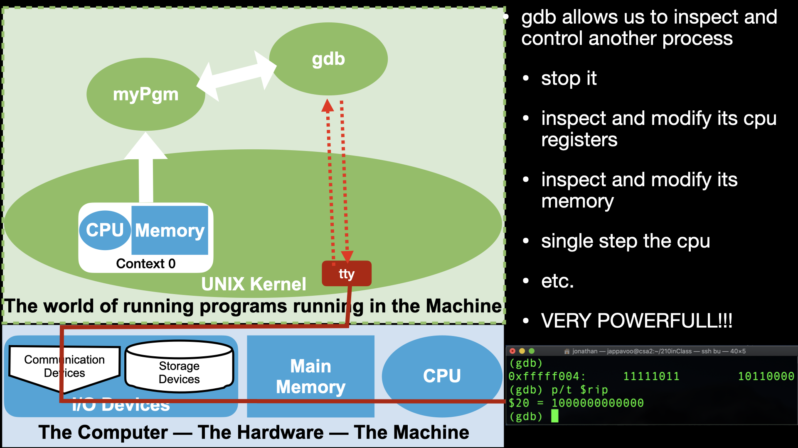
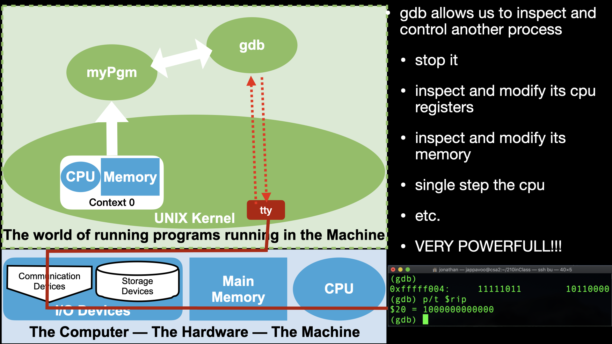
7.3.3. GDB Manual#
https://www.gnu.org/software/gdb/documentation/
CODE: asm - The 'Empty' assembly program
/* General antomy of a assembly program line
[lablel]: <directive or opcode> [operands] # comment
*/
.intel_syntax noprefix # assembler syntax to use <directive>
# set assembly language format to intel
.text # linker section <directive>
# let the linker know that what follows are cpu instructions to
# to be executed -- uposed to values that represent data.
# For historical reasons cpu instructions are called "text"
.global _start # linker symbol type <directive>
# makes the symbol _start in this case visible to the linker
# The linker looks for an _start symbol so that it knows address
# of the first instruction of our program
_start: # introduce a symbolic (human readable) label for "this" address
# associates the address of this point in our program with the
# name following the ':' -- in our case _start
# In our program or in the debugger we can use this name to
# to refer to this location -- address. And thus the values
# that end up here.
.byte 0x00, 0x00, 0x00, 0x00 # .byte directive place value at successive locations in memory
.byte 0x00, 0x00, 0x00, 0x00 # (https://sourceware.org/binutils/docs/as/Byte.html#Byte)
The OS lets us have access to parts of the CPU and Memory via a Process. For everything else we will need to make calls to the OS Kernel functions to do.
Let’s use the standard tools to build a “empty” binary, create a process from it and use gdb to explore the parts of the machine that a Process lets us control. Eg use the debugger to read, write memory, explore the internals of the cpu and control it!
setup
cd
mkdir empty
cd empty
# of course at this point it would be a good idea to setup a git repository but we will skip
lets write some code!!!!
.fill can be used to fill memory ;-) repeat, size, value
.fill 16, 1, 0x00 // .fill directive fills memory with n copies of values
// (https://sourceware.org/binutils/docs/as/Fill.html#Fill)
NOTES: on building empty
# To assemble the code we will use the following command:
as empty.s -o empty.o
# ok lets see what happened
ls
# lets link it up
ld empty.o -o empty
ls
# lets examine this elf file
file empty
ls -l empty
# still pretty big given that we only asked to load 4 bytes of zeros into memory
# all the other stuff necessary to describe to the OS and other tools the program image
# use objdump tool to print out ascii data from the executable file
# -s
# --full-contents
# Display the full contents of any sections requested. By default all non-empty
# sections are displayed.
objdump -s empty
# Display the symbol table the locations that each "symbol" got assigned to by the linker
# This is the kind of extra information that make the elf file larger than just the contents
# note where _start got assigned to
objdump -t empty
# ok lets got to the debugger
# Let use gdb command to poke around empty
# To get the debugger going:
gdb -x setup.gdb empty
# To setup the assembly syntax to intel:
set disassembly-flavor intel
# at this point no process has been created yet
# we are just exploring the binary file
p _start
x /4xb _start
# to get things running we use the run command
# but we don't want to execute any instructions so
# we first place a breakpoint at the location of _start
b _start
# now run
run
# lets see if a process was created
!ps auxgww | grep empty
info proc
# ok lets poke around the process
# lets examine the cpu
info registers
# we can print out the value of an individual register with
# variables in gdb $<name> there are convience variables for each
# of the registers
p /x $rax
p /t $rax
p /d $rax
p /x $rip
# lets examine the memory : peek
x/8xb 0x401000
x/2i
# lets write some bytes into memory
# lets write and instruction at _start
# we will try and use the popcnt instruction
# popcnt rbx, rax -- rbx = population count of rax
# see intel sdm volume 2B popcnt
# tells use how to encode the instruction via
# opcode encoding.
# as we load the memory we will ask gdb to try and interpret
# the opcode for us and see how the values change what
# the cpu will do when we have it fetch the instruction
# rex.w = 0x48 -- 64 bit operand
# D8 -- encodes which registers are the operands
set {unsigned char}(_start) = 0xF3
x/5xb _start
disas _start
set {unsigned char}(_start+1} = 0x48
set {unsigned char}(_start+2) = 0x0F
set {unsigned char}(_start+3) = 0xB8
set {unsigned char}(_start+4) = 0xC3
x/5xb _start
x/5tb _start
x/5db _start
x/5ub _start
x/1i _start
# lets execute the instruction and play
# around with the register values
# to make life easier we will use the gdb text uit support
# Configure a layout that is more friendly to assembly code:
tui new-layout mylayout regs 3 {src 1 asm 1} 2 cmd 1 status 0
# Switch to the new layout:
layout mylayout
winh cmd 4
focus cmd
# run one interation of the processor loop:
stepi
# look what happened to the registers
set $rax = 0b1011
p /t $rax
# how do we reexecute the instruction?
set $pc = _start
stepi


7.4. Intel Manuals#
Freely available online: https://software.intel.com/content/www/us/en/develop/articles/intel-sdm.html
Volume 1: Topics regarding general purpose programming
largely what we will focus on
Volume 2: Is a reference of all the instructions which we can consult as needed
I usually grab the very large manual that combines volumes 1,2,3,4 https://software.intel.com/content/www/us/en/develop/articles/intel-sdm.html#combined
Which include Volumes 3 and 4. These focus on the systems programming features necessary to write operating systems kernels. But these are not necessary for normal user application programming.
7.5. Extra info about Intel#